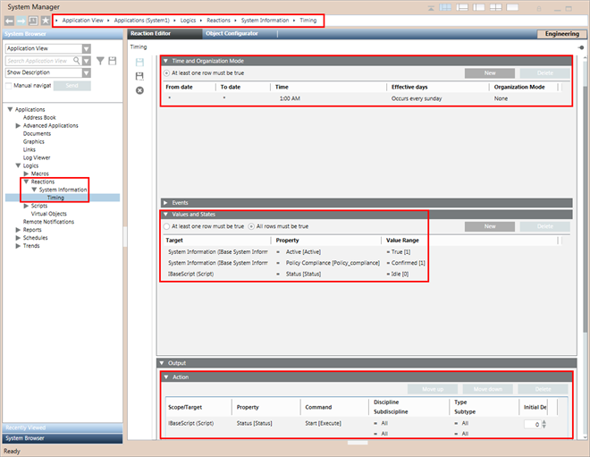

Pre-configured Reaction (Timing)
When you install IBase, a pre-configured reaction known as timing becomes available in the Reaction Editor tab when you select Applications > Macros > Logics > Reactions > System Information > Timing.
This is used during the automatic execution of the IBase script. Thus the IBase script will execute automatically if all the conditions configured in it are valid.
You can modify the reaction (Timing). For example, you can change the time and/or day when the IBase script execution starts.
